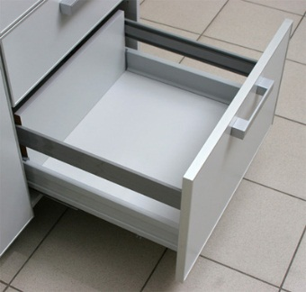
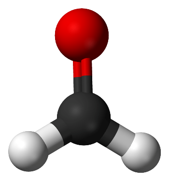

Кухонная утварь. Высокие ставки на высокое карго.
Хорошо оборудованная кухня обязана иметь большое количество выдвижных ящиков. Которые позволяют разделить кухонную утварь по зонам доступа относительно надобности.
Далее...
МДФ фасады
Одним из самых популярных и практичных материалов для изготовления мебельных фасадов является МДФ. По технологии производства схожий с ДВП, МДФ плита создаётся путём прессовки мелкой древесной фракции под высокой температурой с добавлением органических связующих, которые не содержат фенольные и эпоксидные смолы.
Далее...
Выдвижные ящики на кухне

Выдвижные ящики это атрибут, без которого сложно представить практически любой вид корпусной мебели. Большие и маленькие вдвижные ящики на кухне призваны облегчить приготовление пищи хорошей организованностью разнообразных кухонных мелочей которые должны быть постоянно под рукой, дабы их не пришлось отрывать из под завалов кухонной техники в больших распашных ящиках. Различные системы выдвижения ящиков призваны облегчить быт простым доступом к необходимым вещам на кухне или в шкафу купе.
Далее...
Организация кухонного пространства, или как сделать так, чтобы поиск блендера или миксера не занимал драгоценное время

Что надо сделать, чтобы устранить беспорядок в кухонных шкафчиках? Чтобы Ваше кухонное царство было упорядоченных и хорошо организованным? Как сделать свою кухню не только красивой, но и практичной? Предложим Вам решение, которое поможет не только справится с расположением разнообразной кухонной техники, но и обеспечит максимальную доступность к нему без нагромождения на столешнице занимая драгоценное рабочее пространство.
Далее...
Мебельная кромка. Или то, что поможет вашей мебели жить долго и счастливо
Мебельная кромка далеко не самая последняя деталь, которая значительно влияет на внешний вид долговечность мебели. Кромки делятся на две категории: синтетические и натуральные. Натуральная кромковочные материалы довольно дороги, но не столь практичны как синтетические. На смену натуральной кромке,-шпону и фанере, пришла более дешёвая кромка на бумажной основе.
Далее...
Маленькая кухня и как с этим бороться
Ограниченное кухонное пространство является часто встречающейся проблемой советских домов, коих в Киеве намного больше чем новостроек. Хотя далеко не все новостройки могу похвастаться достаточной площадью кухонных помещений. Кстати в отличие от советских домов, в новостройках последних лет к небольшой по площади кухне добавился один элемент украинского конструкторского «ноу-хау». По какой-то непонятной причине, стало «модным» у застройщика выводить газовые счётчики и газовые колонки на одну стену в самых «неожиданных» местах с внешней разводкой труб и т.д. И у хозяев новой квартиры первым делом возникает вопрос не о выборе цветов и материалов для будущей мебели, а о том, как сделать так, чтобы как можно аккуратнее и без лишних потерь закрыть всю эту гениальность украинской архитектурной мысли. Тут идут в дело и шкафы, и шкафчики, и пеналы.
Далее...
Шкаф-купе - практичная красота
Эргономичность, качество фурнитуры и грамотная установка - три основных фактора, на которых прочно стоит правильный шкаф-купе. Основная философия любого шкафа-купе-это максимальное получение полезной площади при минимальном использовании задействованного пространства. Второе-это качество комплектующих - направляющие полного выдвижения для ящиков, роликов алюминиевого профиля а также разнообразной начинки. И третье-грамотный монтаж, который обеспечит максимальный срок эксплуатации шкафа и его комплектующих.
Далее...
Формальдегиды в составе ДСП

Как, вероятно, многим известно в формировании ДСП плиты используется ничтожная толика формальдегида. По сути формальдегид встречается практически везде. Используется в фармакологии и медицине, косметологии, лёгкой промышленности. Список бытовых продуктов и продуктов личной гигиены, которые содержат малые количества формальдегида, бесконечен.
Далее...
Вкратце о ДСП
ДСП.. Как много в этом слове для сердца мебельщика слилось =) Лирика. Итак, о ДСП вкратце. Первые образцы сего практичного композиционного материала появились в 1940-х годах. Это сейчас ДСП встречается где угодно и валяется, практически, как мусор под ногами. А тогда, это был гений инженерной мысли - дать новую жизнь отходам деревообрабатывающей промышленности.
Далее...
Рекомендации наполнения шкафов

Поскольку рассортировка вещей внутри шкафа-купе – не самое приятное и емкое по времени мероприятие, мы поможем вам свести к минимуму необходимость его проведения. Варианты наполнения шкафов-купе могут быть самыми разными, но результат всегда один и тот же – вы сможете долго пользоваться мебелью, и вещи все время будут находиться на своих местах.
Далее...
Рекомендации наполнения кухни

Каковы варианты планировки кухни?
Выбор планировки кухни зависит от размера и формы помещения. Самые распространенные типы расстановки кухонной мебели — в виде одного или двух рядов, угла и буквы «п». Угловой вариант подходит для маленьких квадратных помещений — подобная планировка дает возможность максимально использовать все имеющееся пространство. Если кухня представляет собой проходную комнату, мебель придется расставлять вдоль двух стен, параллельных друг другу. П-образный вариант подходит для больших помещений.
Есть еще так называемая островная кухня, в которой к угловому или П-образному гарнитуру добавляют центральный элемент (как правило, разделочный стол с раковиной или плитой). Такая планировка сейчас особенно модна и оптимальна для больших пространств.
Далее...
Материалы и декоры
Здесь Вы можете ознакомиться с качеством нашей продукции и материалами, посмотреть нашу мебель, выбрать необходимое Вам внутреннее наполнение шкафа купе или кухни, материалы для оформления фасада и купить мебель.
Каждый шкаф купе как и кухня индивидуальны, заказ может быть выполнен по предложенному Вами эскизу. На нашем сайте Вы увидите фотографии уже готовых изделий и сможете узнать ориентировочную стоимость Вашего шкафа купе, кухни, прихожей, гостиной или детской.
Далее...